library(tidyverse)
library(cowplot)
library(broom)
library(modelr)
library(viridis)
library(lubridate)
library(hms)
library(knitr)
library(kableExtra)
knitr::opts_chunk$set(tidy.opts=list(width.cutoff=60),tidy=TRUE, echo = TRUE, message=FALSE, warning=FALSE, fig.align="center")
source("../../IDA/tools/plotting_tools.R")
theme_set(theme_1())On 06/10/19 I tried a first attempt with PYO in 1% agarose +/- 50% glycerol, to try perturbing the effective diffusion coefficient measured by FRAP. This failed, and I saw photoactivation instead of any type of FRAP. I thought of a number of reasons why this might be and possible solutions, so I tried again with more concentration so glycerol. I reasoned that even if the photoactivation was real that it may not be a problem at lower concentrations. The other explanation I considered was that perhaps the TCEP did not diffuse/react as quickly in the glycerol gel, and maybe it just needed longer to reduce the PYO.
For this experiment I setup 1% agarose gels with 0, 10, 20, and 50% glycerol with PYO in the same format as last time. I also tried two gels with PCA instead of PYO, but I was not able to FRAP PCA at all.
It is a reasonable expectation that glycerol makes the solvent more viscous and slows diffusion. Here’s one reference that suggests we should see a decrease of 2-5x over this range of glycerol.
I made the agarose pads very similarly to how I did on 06/10. I made up the appropriate PBS - glycerol mixtures (1x PBS final concentration) using 2x and 1x PBS and pure glycerol. Then I dissolved the agarose in the solutions (~20mL) and microwaved to dissolve. The molten gels were stored in the 60 degree water bath, while I aliquoted the appropriate amount of PYO (300uM final) or PCA (500uM final) into fresh 15mL tubes. Then I mixed 3mL of the appropriate agarose - glycerol, vortexed and then let the tubes briefly settle in the water bath before pouring into the coverslip bottom mattek dishes.
The gels were left to solidify at room temp for a full hour, since I knew that the glycerol gels take longer to solidify. Then I added 90uL of TCEP stock to each dish before I even left the lab, which gave it plenty of time to incubate. Here’s a picture about 1.5 hrs after adding the TCEP. You can see obvious PYO reduction in all three of the glycerol gels shown (the 0% glycerol pad was on the microscope), and you can see the greenish color of reduced PCA in the 0% glycerol PCA gel. So, either waiting longer for the gel to solidify or for the TCEP reduce facilitated PYO reduction even in the 50% glycerol gel as compared to the weirdness on 06/10.
knitr::include_graphics("Photos/IMG_20190613_144416.jpg")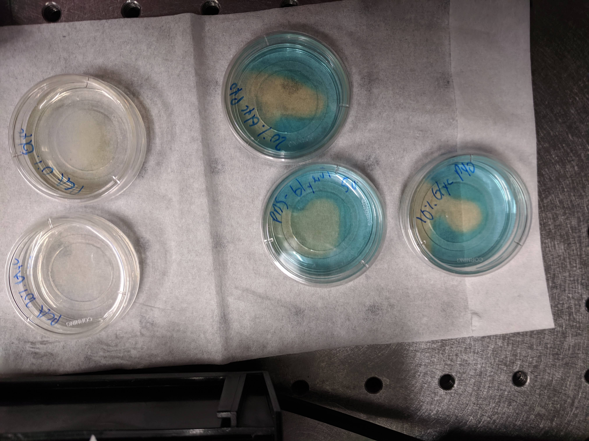
Other photos of the gels are in the Photos directory in this directory.
I did not take a picture of the settings this time, but they were very similar to 06/10. See the file names for some descriptions of the parameters. All images were collected in 16bit. The only notable change I made for some of the PYO FRAP acquisitions is that I first acquired at a 50ms frame rate (128px frame) as before (called “rep”). Subsequently I was able to acquire at a framerate of 12ms (I think?), by checking the “acquisition” check box for the bleached circle in the “regions” menu. This told the microscope to only image the 50um radius bleached circle and not the other pixels in the image. Fewer pixels to acquire enabled faster framerate, but we could not estimate the effective bleach radius or the background signal. However, because I just acquired bleaches with the whole frame I think it would be safe to extrapolate from those slower “rep” acquisitions.
Also important to consider, I tried bleaching at 350nm with the two photon and at 405nm with the diode and neither worked better than 375. This means that we are bleaching and acquiring using the two photon laser, which has a very thin cross section - pinhole ~ 4um. Therefore, by bleaching a disc 100um wide and 4um thick, most of the fluorescence recovery will be coming from the top and bottom of the disc, not the edges (x-y). Therefore I think I need to think harder about how to estimate the vertical “nominal” and “effective” bleach radii in order to quantify accurately.
I did try FRAP on the PCA gel (0% glycerol), but there was absolutely no detectable bleaching using the 405 or two photon lasers (350 - 400nm) or both. That data along with the initial tests etc is all in the google sheet. The dataset in this notebook is specifically for the PYO pads at different concentrations of glycerol.
Let’s read in the dataset.
df <- read_csv("06_13_19_PYO_FRAP_glycerols_data.csv")
df## # A tibble: 10,850 x 14
## img_num time bleach_int ref_int filename condition agarose PYO
## <dbl> <dbl> <dbl> <dbl> <chr> <chr> <chr> <chr>
## 1 1 0 3283. 3299. 0pctGly… 0pctGlyc 1pctAg 300u…
## 2 2 0.172 3172. 3221. 0pctGly… 0pctGlyc 1pctAg 300u…
## 3 3 0.524 3234. 3134. 0pctGly… 0pctGlyc 1pctAg 300u…
## 4 4 0.712 3160. 3154. 0pctGly… 0pctGlyc 1pctAg 300u…
## 5 5 0.895 3153. 3213. 0pctGly… 0pctGlyc 1pctAg 300u…
## 6 6 1.08 3205. 3093. 0pctGly… 0pctGlyc 1pctAg 300u…
## 7 7 1.26 3141. 3284. 0pctGly… 0pctGlyc 1pctAg 300u…
## 8 8 1.44 3142. 3150. 0pctGly… 0pctGlyc 1pctAg 300u…
## 9 9 1.61 2960. 3193. 0pctGly… 0pctGlyc 1pctAg 300u…
## 10 10 1.79 3157. 3066. 0pctGly… 0pctGlyc 1pctAg 300u…
## # … with 10,840 more rows, and 6 more variables: objective <chr>,
## # frames <chr>, excitation <chr>, bleach <chr>, fast <chr>, id <dbl>Plotting the data looks like this for the 50ms framerate acquisitions (called “rep”):
ggplot(df %>% filter(fast == "rep"), aes(x = time, y = bleach_int,
group = id)) + geom_path(alpha = 0.25) + facet_wrap(fast ~
condition, scales = "free")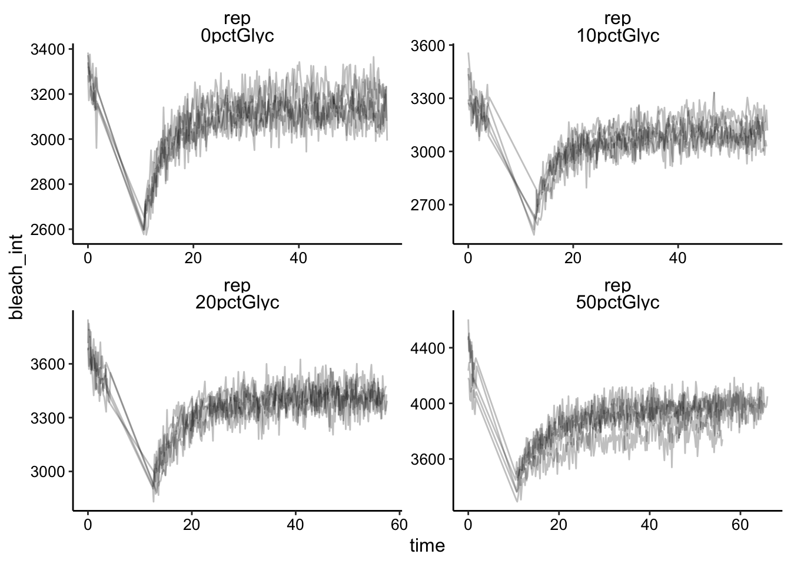
And here’s what the 12ms acquisitions look like (called ‘repFAST’):
ggplot(df %>% filter(fast == "repFAST"), aes(x = time, y = bleach_int,
group = id)) + geom_path(alpha = 0.25) + facet_wrap(fast ~
condition, scales = "free")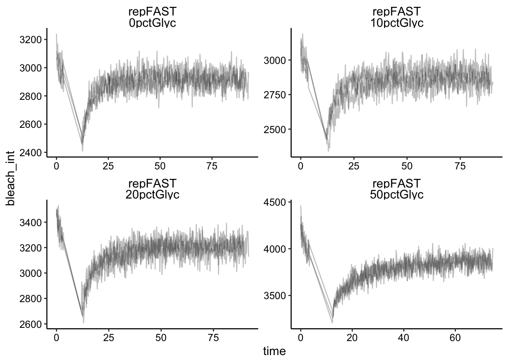
Already we can see that maybe the recovery isn’t as sharp in the 50% glycerol condition. It’s hard to tell with the others. Also note that the replicates all seem to overlap pretty well. It’s hard to tell whether the faster framerate helped or not, but we’ll come back to that. You can also see that we are consistently getting a 10 - 20% bleach, which is great compared to where we started!
Ok to quantify the data we need to singly normalize the data by the initial fluorescence.
df_baselines <- df %>% group_by(condition, fast, id) %>% filter(img_num <=
10) %>% summarise(avg_baseline = mean(bleach_int))
df_single_norm <- left_join(df, df_baselines, by = c("condition",
"fast", "id")) %>% mutate(single_norm_int = bleach_int/avg_baseline)
ggplot(df_single_norm, aes(x = time, y = single_norm_int, group = id)) +
geom_path(alpha = 0.25) + facet_grid(fast ~ condition, scales = "free")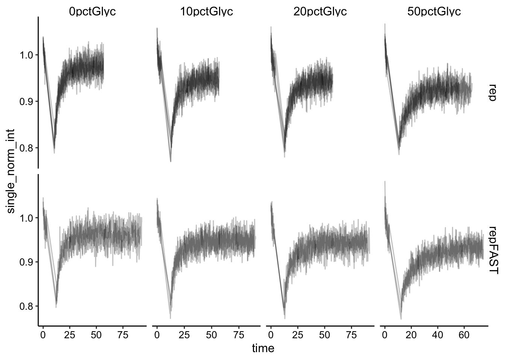
Next we will do the full scale normalization to account for the amount that was bleached.
df_full_norm <- df_single_norm %>% group_by(condition, fast,
id) %>% mutate(min_single_norm_int = min(single_norm_int)) %>%
mutate(full_norm_int = (single_norm_int - min_single_norm_int)/(1 -
min_single_norm_int))
ggplot(df_full_norm, aes(x = time, y = full_norm_int, group = id)) +
geom_path(alpha = 0.25) + facet_grid(fast ~ condition, scales = "free")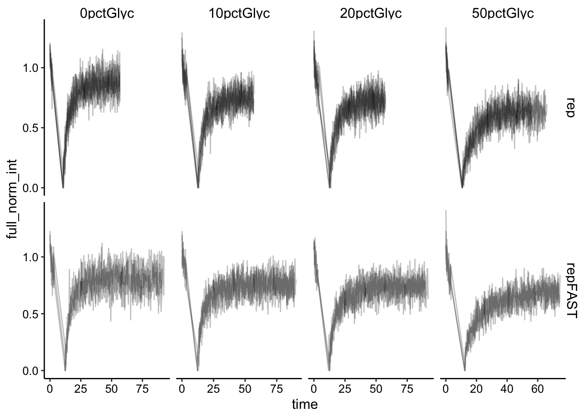
Then we need to normalize the bleach to t = 0.
df_full_fit <- df_full_norm %>% filter(time > 5) %>% group_by(condition,
fast, id) %>% mutate(min_time = min(time)) %>% mutate(norm_time = time -
min_time)
ggplot(df_full_fit, aes(x = norm_time, y = full_norm_int, group = id)) +
geom_line(alpha = 0.25) + facet_grid(fast ~ condition, scales = "free")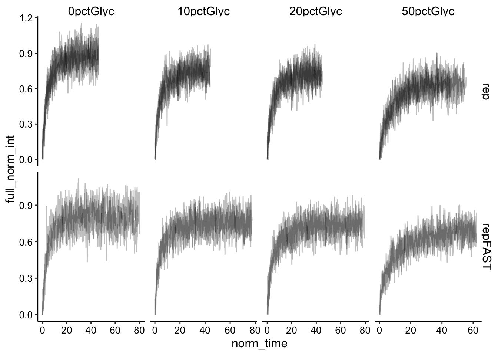
Normalization looks good. Let’s directly compare the fast and slow acquisition rates:
ggplot(df_full_fit, aes(x = norm_time, y = full_norm_int, color = fast,
group = id)) + geom_line(alpha = 0.25) + facet_wrap(~condition,
scales = "free")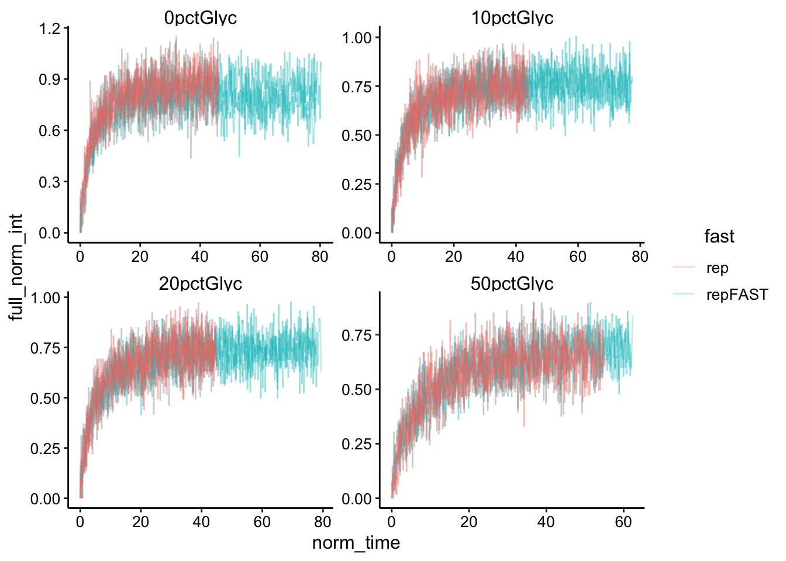
The shorter time scales repFAST measurements overlay the rep acquisitions very well. It’s still not obvious if the two framerates will make a big difference…
Finally, we can fit the recovery with our single exponential model. Here’s the slow acquisition first:
ggplot(df_full_fit %>% filter(fast == "rep"), aes(x = norm_time,
y = full_norm_int)) + geom_point(shape = 21, alpha = 0.5) +
geom_smooth(method = "nls", formula = y ~ (I0 - a * exp(-B *
x)), method.args = list(start = c(I0 = 0.85, a = 0.5,
B = 0.2)), se = F) + facet_grid(id ~ condition, scales = "free")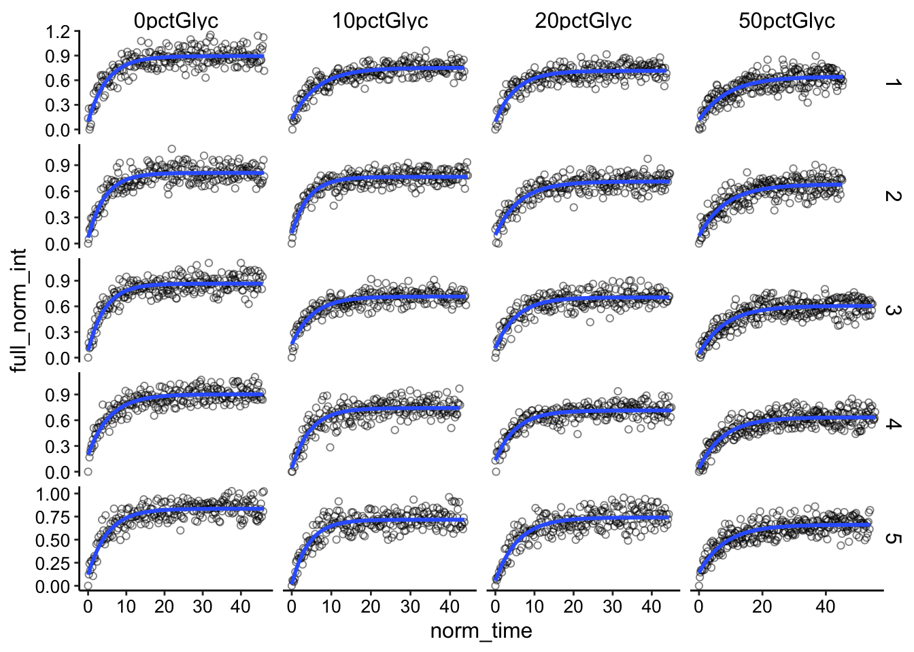
The fits seem pretty good overall. Let’s pool all the conditions and see if we can simply see a difference in the fit of the whole dataset.
ggplot(df_full_fit %>% filter(fast == "rep"), aes(x = norm_time,
y = full_norm_int, color = condition)) + geom_point(shape = 21,
alpha = 0.25) + geom_smooth(method = "nls", formula = y ~
(I0 - a * exp(-B * x)), method.args = list(start = c(I0 = 0.85,
a = 0.5, B = 0.2)), se = F) + scale_color_viridis_d()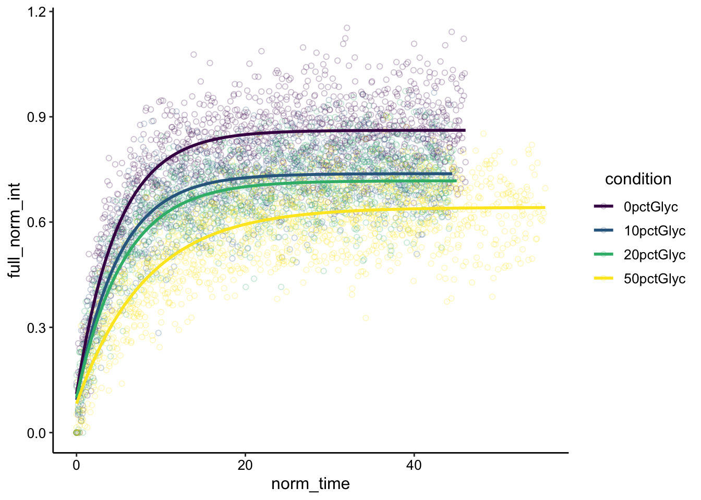
Wow! We can the expected trend here and a few other things - First, the higher the percentage glycerol the slower the recovery seems to be. This is obvious for the 50pct glycerol, but actually for the 10 and 20% it’s less obvious. 10 and 20 could just look shallower because the recovery is less complete than 0% glycerol. We’ll have to look at the parameter estimations to be sure.
Let’s now look at the same type of plots for the fast framerate data:
ggplot(df_full_fit %>% filter(fast == "repFAST"), aes(x = norm_time,
y = full_norm_int)) + geom_point(shape = 21, alpha = 0.5) +
geom_smooth(method = "nls", formula = y ~ (I0 - a * exp(-B *
x)), method.args = list(start = c(I0 = 0.85, a = 0.5,
B = 0.2)), se = F) + facet_grid(id ~ condition, scales = "free")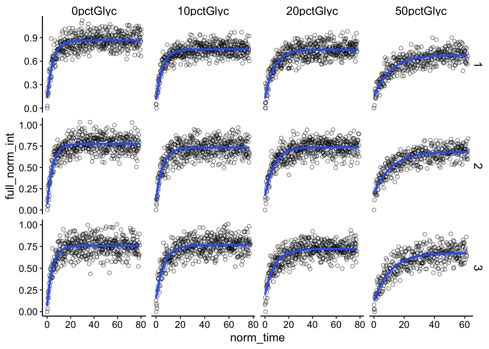
Again, the fits look reasonably good. Let’s see what happens when we pool all the replicates:
ggplot(df_full_fit %>% filter(fast == "repFAST"), aes(x = norm_time,
y = full_norm_int, color = condition)) + geom_point(shape = 21,
alpha = 0.25) + geom_smooth(method = "nls", formula = y ~
(I0 - a * exp(-B * x)), method.args = list(start = c(I0 = 0.85,
a = 0.5, B = 0.2)), se = F) + scale_color_viridis_d()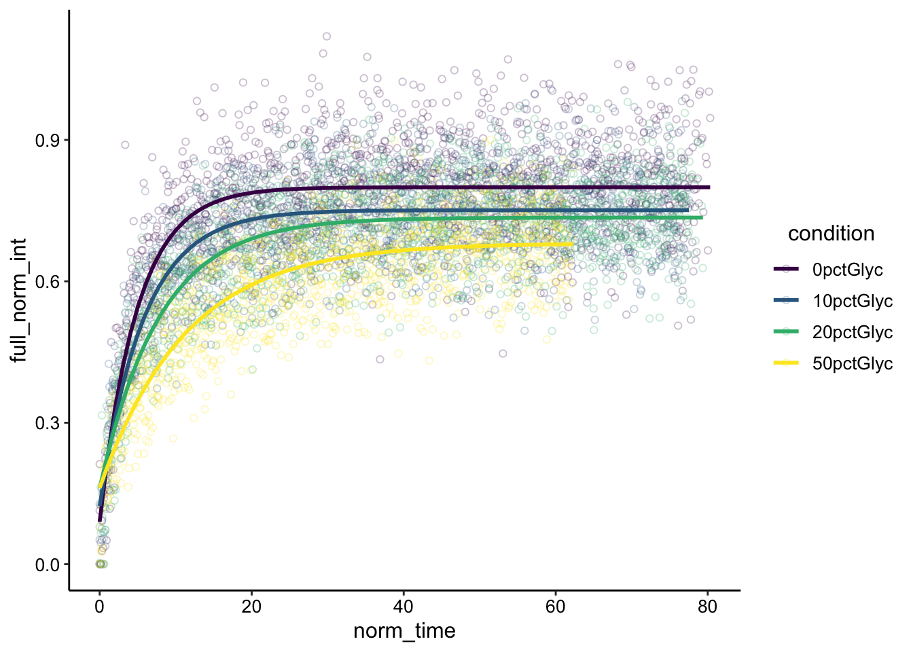 Nice! So we see the same trend as above. The 50% glycerol recovery seems to clearly be slower, and maybe the 20% does too. We also have the same confounding visual that the recovery is less complete when glycerol is added, so let’s move on to some parameter estimation.
As before, we are fitting with a single exponential model of the form:
\[ I_{fit} = I_0 - \alpha e^{- \beta t}\]
Which gives the half recovery time:
\[\tau_{1/2} = \frac{ln(2)}{\beta}\]
Which then gives the diffusion coefficient:
\[D = 0.224 \frac{r^2}{\tau_{1/2}}\]
And corrected for bleaching that is not instantaneous:
\[D = \frac{r_e^2 + r_n^2}{8 \tau_{1/2}}\] Where \(r_e\) is the effective bleach radius (determined from first image post bleach) and \(r_n\) is the nominal bleach radius that was where the laser was setup to scan. This is where the tricky part about the two-photon acquisition comes in - we’ll get back to this at the end.
Ok, so let’s fit the model and extract the coefficients. First the slow acquisition:
sing_exp_coef <- NULL
sing_exp_coef <- df_full_fit %>% group_by(condition, fast, id) %>%
do(tidy(nls(formula = full_norm_int ~ I0 - a * exp(-B * norm_time),
data = ., start = list(I0 = 0.85, a = 0.5, B = 0.2),
control = nls.control(tol = 1e-07)), conf.int = T))
ggplot(sing_exp_coef %>% filter(fast == "rep"), aes(x = condition,
y = estimate, color = condition)) + geom_pointrange(aes(ymin = conf.low,
ymax = conf.high), position = position_jitter(width = 0.1)) +
facet_wrap(~term, scales = "free", ncol = 1) + scale_color_viridis_d()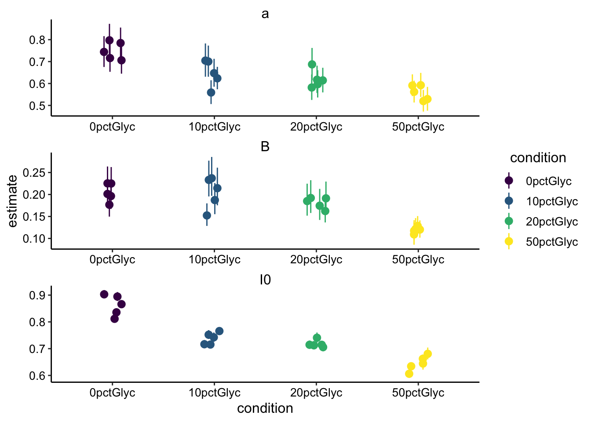
And the fast acquisition:
ggplot(sing_exp_coef %>% filter(fast == "repFAST"), aes(x = condition,
y = estimate, color = condition)) + geom_pointrange(aes(ymin = conf.low,
ymax = conf.high), position = position_jitter(width = 0.1)) +
facet_wrap(~term, scales = "free", ncol = 1) + scale_color_viridis_d()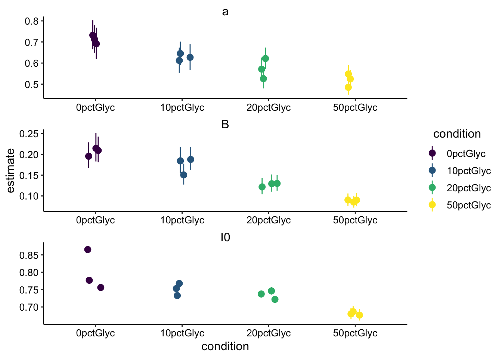
Ok, so we can see the same trends in the two types of acquisitions. \(a\) and \(I_0\) and \(\beta\) all decrease with increasing glycerol. Remember that \(\beta\) is what determines the half recovery time and therefore the diffusion coefficient, so let’s focus on that. Although there are 2 fewer replicates for the fast acquisition times, it seems clearer in the fast data that \(\beta\) is decreasing with added glycerol. The error bars seem tighter for the fast acquisition set. Let’s go ahead and calculate the \(\tau_{1/2}\) for the datasets:
tau_est <- sing_exp_coef %>% filter(term == "B") %>% mutate(tau_mean = log(2)/estimate) %>%
mutate(tau_low = log(2)/conf.low) %>% mutate(tau_high = log(2)/conf.high)
ggplot(tau_est, aes(x = condition, y = tau_mean, color = condition)) +
geom_pointrange(aes(ymin = tau_low, ymax = tau_high), position = position_jitter(width = 0.1)) +
scale_color_viridis_d() + facet_wrap(~fast, scales = "free",
ncol = 1) + ylim(0, 10)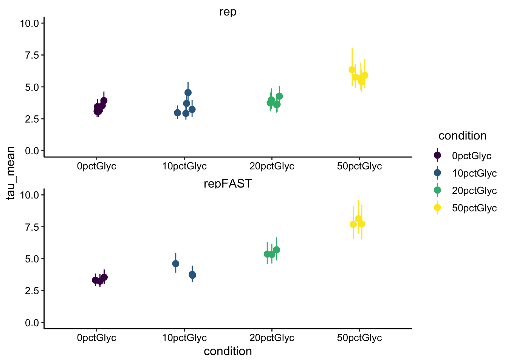
So as expected the changes in \(\beta\) show up as increasing half recovery times. There seems to be a difference separating 0 from 50% glycerol of ~4-5 seconds. Now’s a good time to refer back to the FRAP curves. Let’s look at a few examples:
ggplot(df_full_fit %>% filter(fast == "repFAST"), aes(x = norm_time,
y = full_norm_int, color = condition)) + geom_hline(yintercept = 0.5,
linetype = "dashed") + geom_point(shape = 21, alpha = 0.5) +
scale_color_viridis_d() + xlim(0, 20) + facet_wrap(~condition,
scales = "free") + ylim(0, 1)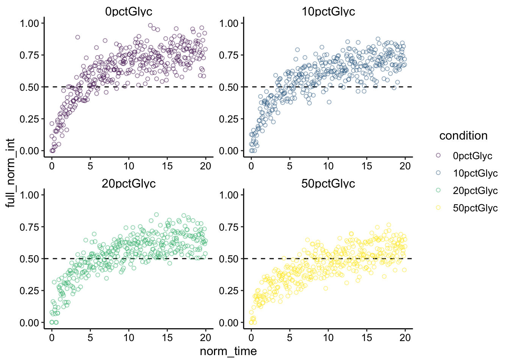 Ok, so these \(\tau_{1/2}\) estimates seem to make sense. I plotted a line at 0.5 normalized intensity here, remember that half recovery is actually half of the recovery, \(I_0\), not all the way to 1, so there is some bias in the above plot. Really all the dotted lines should vary from 0.425 (half highest 0% I0) to 0.33 (half lowest 50% I0), but I think it still makes sense and visually there is a difference.
Now let’s calculate our \(D_{eff}\) using just the nominal bleach radius of 50um (ignoring the two-photon issue):
r = 0.005
d_est <- tau_est %>% mutate(d_mean = (0.224 * r^2)/tau_mean) %>%
mutate(d_low = (0.224 * r^2)/tau_low) %>% mutate(d_high = (0.224 *
r^2)/tau_high)
ggplot(d_est, aes(x = condition, y = d_mean, color = condition)) +
geom_pointrange(aes(ymin = d_low, ymax = d_high), position = position_jitter(width = 0.1)) +
scale_color_viridis_d() + facet_wrap(~fast, scales = "free",
ncol = 1) + ylim(5e-07, 2.5e-06)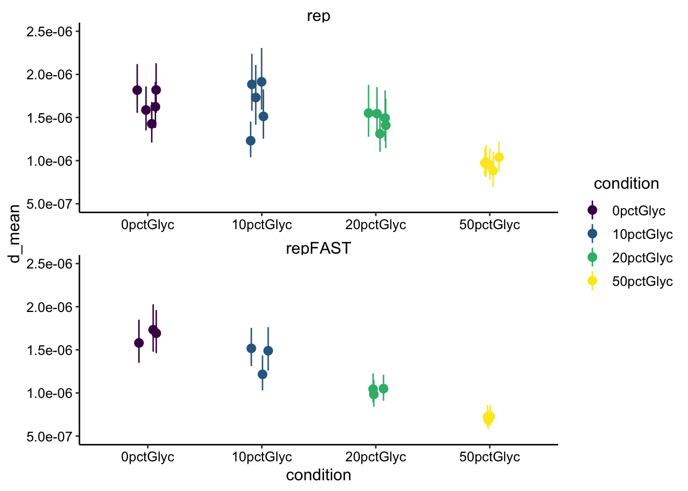
And the effective radius corrected version:
r_n = 0.005
r_e = 0.01
d_mod_est <- tau_est %>% mutate(d_mean = ((r_n^2) + (r_e^2))/(8 *
tau_mean)) %>% mutate(d_low = ((r_n^2) + (r_e^2))/(8 * tau_low)) %>%
mutate(d_high = ((r_n^2) + (r_e^2))/(8 * tau_high))
ggplot(d_mod_est, aes(x = condition, y = d_mean, color = condition)) +
geom_pointrange(aes(ymin = d_low, ymax = d_high), position = position_jitter(width = 0.1)) +
scale_color_viridis_d() + facet_wrap(~fast, scales = "free",
ncol = 1) + ylim(1.5e-06, 6.5e-06)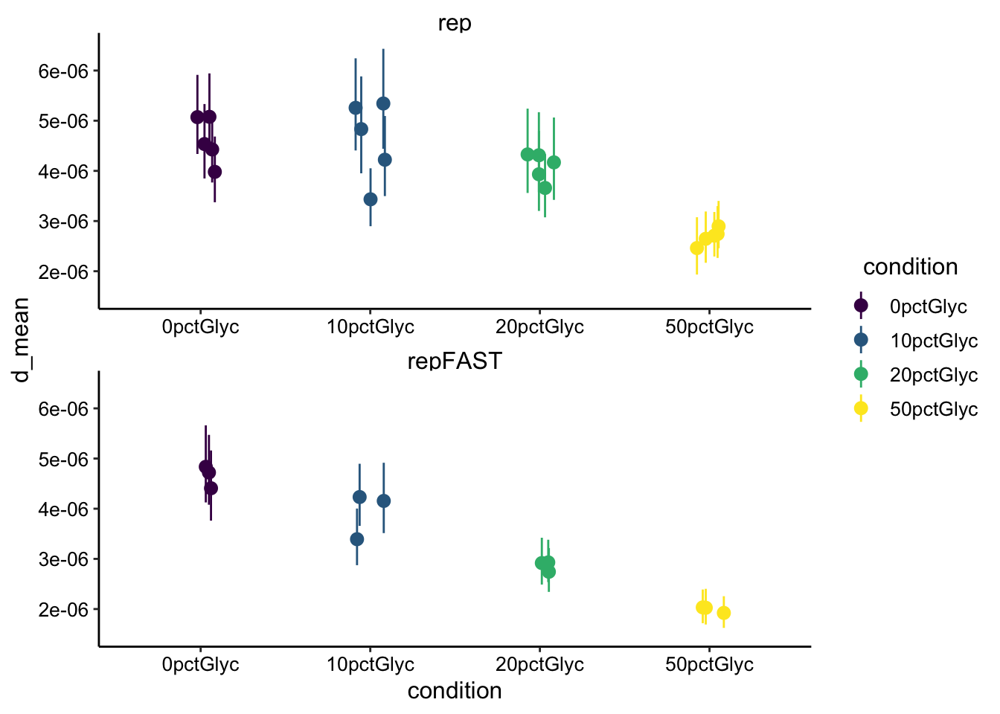
Let’s see what happens to this estimate if we assume that instead of the x-y radius, that the relevant parameter is the z radius produced by the thin plane excited by the 2p laser. The pinhole was ~4.4um, so let’s consider that the nominal diameter, so the nominal radius is \(r_n = 2.2 \mu m\). Let’s assume for the moment that the effective bleach radius in Z is the same as in x-y \(r_e = 100 \mu m\). I’m not sure this is a good assumption…but let’s just see:
r_n = 0.00022
r_e = 0.01
d_mod_est <- tau_est %>% mutate(d_mean = ((r_n^2) + (r_e^2))/(8 *
tau_mean)) %>% mutate(d_low = ((r_n^2) + (r_e^2))/(8 * tau_low)) %>%
mutate(d_high = ((r_n^2) + (r_e^2))/(8 * tau_high))
ggplot(d_mod_est, aes(x = condition, y = d_mean, color = condition)) +
geom_pointrange(aes(ymin = d_low, ymax = d_high), position = position_jitter(width = 0.1)) +
scale_color_viridis_d() + facet_wrap(~fast, scales = "free",
ncol = 1)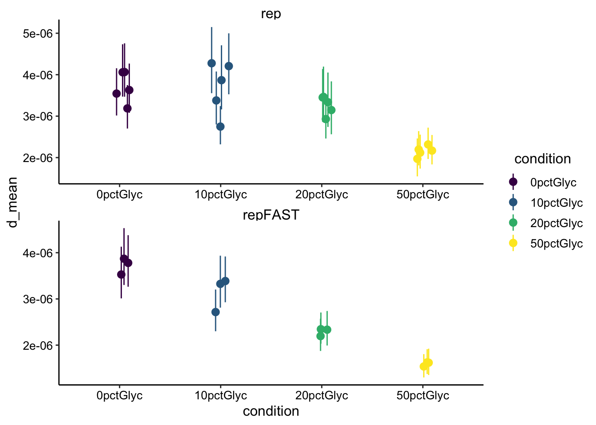
Ok, so the estimated diffusion coefficient has decreased a little, but it’s still reasonably in the 10^-6 cm^2 / sec range. I think We will need to think about this more seriously.